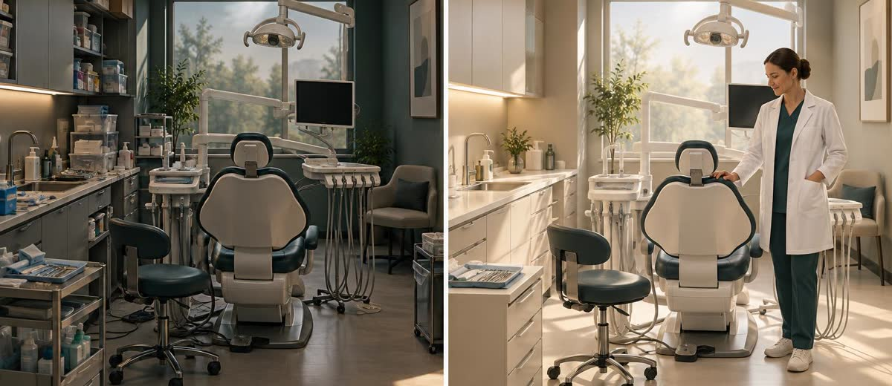

El overhead de tu clínica dental: cuánto se te escapa antes de que quede beneficio

Dos clínicas. Misma facturación. Misma ciudad. Aranceles parecidos.
Una se lleva 8 euros de beneficio de cada 100 que cobra. La otra, 18.
No cobran distinto. No tienen más pacientes. No hacen más implantes ni más ortodoncia.
La diferencia está en el overhead: lo que se va antes de que quede nada para el dueño.
Qué es el overhead y por qué muy pocos lo miden
El overhead es el porcentaje de la facturación que la clínica consume en gastos antes de contar el beneficio del propietario. Incluye todo: personal, alquiler, material, laboratorio, suministros, seguros, software, marketing y cualquier otro gasto operativo.
En España, una clínica dental media destina entre el 62% y el 65% de lo que factura a cubrir esos gastos.
Las clínicas de alto rendimiento lo tienen en el 55% y el 60%.
Por encima del 75%, la rentabilidad está comprometida de forma estructural. No es un mal mes: es un problema de modelo.
Y sin embargo, la mayoría de los propietarios no sabe en qué punto está. No miden su overhead. Solo perciben que trabajan mucho para que sobre poco.
Lo que esconde esa diferencia de 7-10 puntos
Puede parecer pequeño. No lo es.
Sobre una facturación media de 500.000 euros al año, esa diferencia de 7 a 10 puntos porcentuales equivale a entre 35.000 y 50.000 euros más de beneficio anual.
Sin tratar un paciente más. Sin subir una sola tarifa. Sin hacer una campaña de publicidad.
El gap de rentabilidad entre la clínica media y la clínica buena no está en cobrar más. Está en perder menos por el camino.
El problema es que esa pérdida no se ve como pérdida. Se ve como "lo que cuesta tener la clínica abierta". Y ahí está la trampa.
Las partidas que más suelen dispararlo
Cuando el overhead supera el 65%, casi siempre hay una o varias de estas causas:
- Personal sobredimensionado o mal repartido. El coste de personal suele ser la partida más grande (entre el 25% y el 35% de la facturación). Un día con tres auxiliares y dos doctores para cuatro pacientes no es eficiencia: es overhead.
- Alquiler desproporcionado respecto a producción. El local ideal para facturar 800.000 euros puede ser demasiado caro cuando produces 400.000. La ecuación cambia si no creces.
- Material y laboratorio sin control de consumo. Sin un sistema de control, el material se pide por inercia, caduca, se desperdicia. El laboratorio puede acumular pedidos urgentes con recargo.
- Tecnología que no se usa al máximo. Un escáner intraoral amortizado en tres años solo si se usa a diario. Si hace una exploración semanal, es overhead puro.
- Ausencias y huecos de agenda sin protocolo de reposición. Cada hueco no cubierto es facturación que no entra con gastos que sí salen. El overhead sube automáticamente.
Cómo calcular el overhead de tu clínica
El cálculo básico es sencillo:
Overhead (%) = Total gastos operativos ÷ Facturación total × 100
Los gastos operativos incluyen todo excepto el beneficio del propietario y los impuestos sobre ese beneficio. Si eres el dueño y también el dentista, tu sueldo como clínico va dentro del gasto; el beneficio es lo que queda después.
Con ese número en la mano:
- Por debajo del 60%: zona de alto rendimiento. Tienes margen para crecer o para respirar.
- Entre el 60% y el 65%: zona media. Hay trabajo por hacer, pero la clínica es viable.
- Entre el 65% y el 75%: zona de alerta. Cualquier bajada de facturación o subida de costes te deja sin colchón.
- Por encima del 75%: zona de riesgo estructural. No es un problema de marketing: es un problema de modelo de negocio.
Por dónde empezar a reducirlo
No hay una sola palanca. Pero hay un orden lógico:
- Mide primero. No puedes mejorar lo que no mides. Saca el número de este mes, luego del trimestre, luego del año. Compáralo con el benchmark de tu tipo de clínica.
- Analiza partida por partida. El overhead total no te dice dónde está el problema. Necesitas descomponerlo: personal, alquiler, material, laboratorio, otros. La partida que más se desvía es por donde empiezas.
- Trabaja el aprovechamiento de agenda. Reducir huecos y ausencias es la forma más rápida de bajar el overhead sin tocar costes fijos. Más producción con los mismos gastos = overhead más bajo.
- Revisa los protocolos de compras. Material y laboratorio son las partidas más fáciles de optimizar sin dolor. Un stock mínimo razonado, comparar precios de laboratorio una vez al año y cortar pedidos urgentes puede mover el overhead varios puntos.
- Ajusta la estructura de personal al volumen real. No contratar de más por si acaso. No mantener plantilla sobredimensionada por comodidad. El personal tiene que ser proporcional a la producción sostenida, no a la producción ideal.
En Método EBA trabajamos exactamente este tipo de diagnóstico con clínicas: identificar en qué extremo del benchmark estás, localizar las partidas que están fuera de rango y diseñar un plan para corregirlo. No como teoría, sino como trabajo operativo concreto.
La diferencia no está en cobrar más
La clínica con margen del 18% no factura el doble que la del 8%. Muchas veces facturan lo mismo.
La diferencia está en que una tiene el overhead bajo control y la otra no.
Si mides el tuyo hoy y estás por encima del 65%, no tienes un problema de captación. Tienes un problema de estructura. Y ese es el que hay que resolver primero.